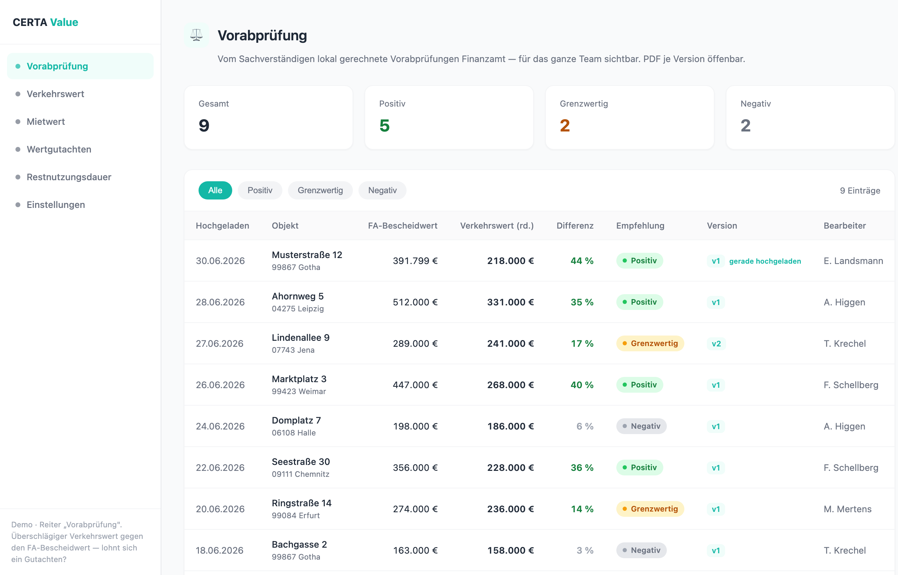

Ein Befehl, ein Fallordner: Der Skill liest die Unterlagen und den Feststellungsbescheid aus, rechnet einen überschlägigen Verkehrswert nach ImmoWertV 2021 und stellt ihn live gegen den vom Finanzamt festgestellten Grundbesitzwert. Eine Ampel sagt: Einspruch per Gutachten sinnvoll — ja oder nein? Beispiel: EFH/ZFH, desolater Zustand (Sachwertverfahren).
Der Sachverständige bekommt den Objektordner zugeteilt und startet den Skill darauf. Anders als beim Wertgutachten ist hier ein zusätzliches Dokument Pflicht: der Feststellungsbescheid des Finanzamts (daraus liest der Skill den Bescheidwert). Schalte zwischen vorher und nachher um und klick auf einen Ordner, um seinen Inhalt zu sehen:
Links alles, was der Skill selbst aus den Unterlagen und dem Bescheid zieht — inklusive der FA-Eckdaten, die er per Vision aus dem Feststellungsbescheid liest. Rechts die Größen, die der Sachverständige prüft, heraussucht und freigibt — Vier-Augen-Prinzip. Erst nach dieser Freigabe geht das Dokument raus.
| Objektdaten | Adresse · Objektart · Baujahr · Flächen · BGF — aus objekt.json |
| Bodenrichtwert | 390 €/m² · BRW-Auszug |
| NHK / GND / RND | Modellwerte · ImmoWertV-Tabellen |
| FA-Bescheidwert | 391.799 € Vision aus dem Feststellungsbescheid |
| Finanzamt · Stichtag · Verfahren · Anteil | Vision aus dem Bescheid (fail-soft: leer, wenn nicht lesbar) |
| Marktmiete | nur Ertragswert · GeoMap-Median − 10 % |
| Verkehrswert + Bandbreite | rd. 218.000 € · live aus der realtech-Engine |
| FA-Werte gegenlesen | Bescheidwert, Stichtag, Verfahren am Original prüfen Pflicht-Gate |
| Sachwert-/Marktanpassung | Faktor für den Zustand setzen 0,93 → Verkehrswert |
| Marktmiete | GeoMap-Startwert übersteuern — Grundstücksmarktbericht hat Vorrang |
| Abschläge | Instandhaltungsstau · Baumängel · Regionalfaktor — fallspezifisch |
| Bodenrichtwert/Stichtag | Auszug bestätigen oder Stichtag wählen |
| Empfehlung ablesen | Die Ampel rechnet das Tool — der SV liest sie ab und verantwortet sie |
Differenz = wie viel der FA-Bescheidwert über dem Verkehrswert liegt. Jede Parameter-Änderung im Datenblatt rechnet Verkehrswert, Differenz, Ampel und den Kundenbrief sofort neu — kein „Berechnen"-Knopf.
Verkehrswertgutachten empfohlen — die Ersparnis übersteigt die Gutachtenkosten klar.
Einzelfallprüfung durch den Sachverständigen — knapp, lohnt sich nicht automatisch.
Gutachten wirtschaftlich nicht sinnvoll — der Bescheid liegt nah am Verkehrswert.
BeispielFA-Bescheidwert 391.799 € gegen Verkehrswert rd. 218.000 € = 44 % Differenz → POSITIV. Bandbreite ± ca. 10–12 %, auf 1.000 € gerundet.
Der Lauf erzeugt eine einzige Datei: die Vorabpruefung.html. Sie ist zugleich Gutachten und Rechner — am Bildschirm Arbeitsfassung mit Prüfvermerken, beim Drucken saubere Kundenfassung. Klick öffnet das echte (anonymisierte) Beispiel:
Vier Seiten in einem lebenden Dokument. Parameter im Datenblatt ändern → Verkehrswert, Bandbreite, Ampel und Kundenbrief rechnen sofort neu.
„Drucken für Kunden" (2 Seiten) → PDF an den Kunden mailen. Der Anschreiben-Text ist zugleich der Mailtext. Fertig.
↺ Weiter prüfen → freigeben (drucken + mailen).
Die Vorabprüfung entsteht lokal beim Sachverständigen. Aus der fertigen Datei genügt ein Klick „In CERTA Value hochladen" — danach liegt der Fall versioniert in der Team-Plattform, im Reiter Vorabprüfung neben den übrigen Modulen (Verkehrswert · Mietwert · Restnutzungsdauer): für alle sichtbar, jede Version als PDF öffenbar, Ampel auf einen Blick.
